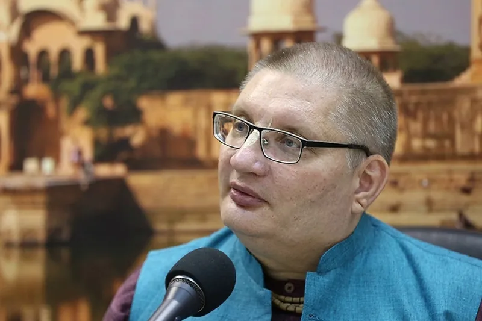
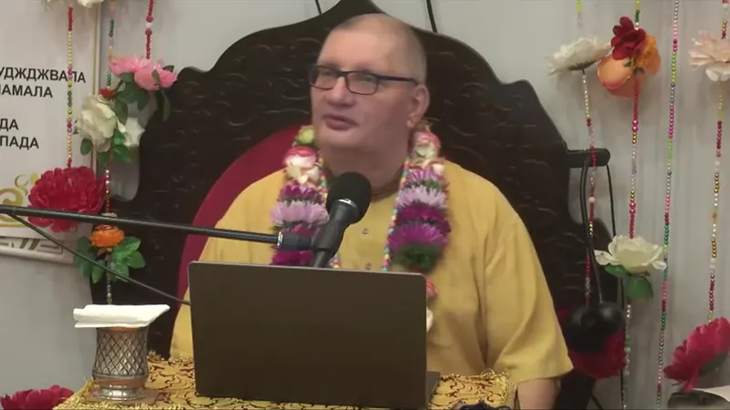
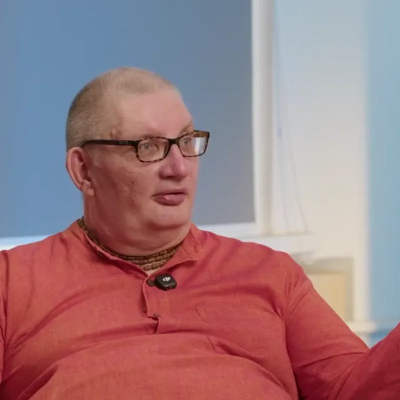
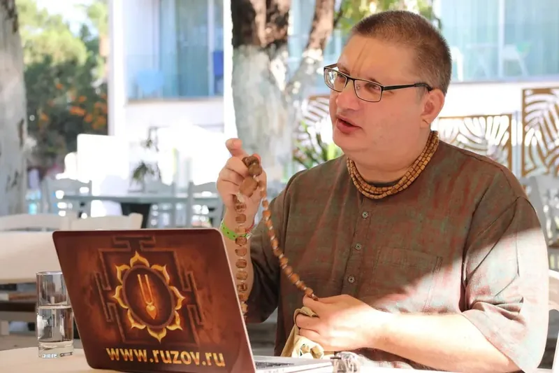

Тысячи часов знаний о человеке, жизни и вечных вопросах — в одном видеоархиве. Здесь собраны лекции, беседы, интервью и ответы на вопросы Вячеслава Рузова, а также многолетние циклы последовательного изучения ведических знаний.
В архиве можно шаг за шагом погружаться в книги мудрости, исследовать природу сознания и законы человеческих отношений, размышлять о семье, предназначении, счастье, времени, судьбе, духовном развитии и смысле жизни. Отдельные подборки посвящены ответам на самые разные жизненные вопросы, духовным праздникам, практическим настройкам на каждый день.
Это не просто собрание отдельных записей, а систематизированная библиотека знаний, к которой можно возвращаться снова и снова: выбрать интересующую тему, пройти целый цикл последовательно или найти ответ на вопрос, который волнует именно сейчас.
948 видеосмотрите прямо здесь
491 часлекций, бесед и ответов
20 плейлистовпо темам и циклам
Более 10 летархив пополняется каждый день
Смотрите прямо здесь
Выбирайте тему, включайте видео и продолжайте свой путь к знанию, осознанности и мудрости.
Дурные привычки: отрезвляющая правда, выбивающая дурь. Интервью с Вячеславом Рузовым
Новое в архиве 30 видео · все на RuTube ↗
 0:44Как спасти наше общество?4 октября 2026
0:44Как спасти наше общество?4 октября 2026 1:57Как победить страх навсегда?3 октября 2026
1:57Как победить страх навсегда?3 октября 2026 1:28Как перестать быть живым мертвецом?2 октября 2026
1:28Как перестать быть живым мертвецом?2 октября 2026 1:26Как перестать бояться? Нужно просто нырнуть2 октября 2026
1:26Как перестать бояться? Нужно просто нырнуть2 октября 2026 2:51Как остановить время и совершить чудо?1 октября 2026
2:51Как остановить время и совершить чудо?1 октября 2026 1:137 дней до просветления30 сентября 2026
1:137 дней до просветления30 сентября 2026 1:15Как мы учимся на самом деле?30 сентября 2026
1:15Как мы учимся на самом деле?30 сентября 2026 1:35Как измерить милость Господа?29 сентября 2026
1:35Как измерить милость Господа?29 сентября 2026 20:32Е.М. Патита Павана дас. Утренняя настройка. Шримад Бхагаватам, 1.7.5529 сентября 2026
20:32Е.М. Патита Павана дас. Утренняя настройка. Шримад Бхагаватам, 1.7.5529 сентября 2026 1:34Как выглядит настоящий стандарт чистоты29 сентября 2026
1:34Как выглядит настоящий стандарт чистоты29 сентября 2026 1:11Как воспитать в себе равное отношение к живым существам?28 сентября 2026
1:11Как воспитать в себе равное отношение к живым существам?28 сентября 2026 40:58Дурные привычки: отрезвляющая правда, выбивающая дурь. Интервью с Вячеславом Рузовым28 сентября 2026
40:58Дурные привычки: отрезвляющая правда, выбивающая дурь. Интервью с Вячеславом Рузовым28 сентября 2026 1:05:38Кришна Сурья дас. ВАМАНА ДВАДАШИ, Москва, 23 сентября 2026г.28 сентября 2026
1:05:38Кришна Сурья дас. ВАМАНА ДВАДАШИ, Москва, 23 сентября 2026г.28 сентября 2026 1:01Кто главный на поле боя, если у него даже нет оружия?27 сентября 2026
1:01Кто главный на поле боя, если у него даже нет оружия?27 сентября 2026 1:35Как стать другом Бога?26 сентября 2026
1:35Как стать другом Бога?26 сентября 2026 1:11К кому приходит Господь26 сентября 2026
1:11К кому приходит Господь26 сентября 2026 1:36ИИ делает людей холодными? Главная опасность технологий25 сентября 2026
1:36ИИ делает людей холодными? Главная опасность технологий25 сентября 2026 1:31:10Е.М. Патита Павана дас. РАДХАШТАМИ, Шримад Бхагаватам 1.8.1, Нижний Новгород, 18 сентября 2026г.25 сентября 2026
1:31:10Е.М. Патита Павана дас. РАДХАШТАМИ, Шримад Бхагаватам 1.8.1, Нижний Новгород, 18 сентября 2026г.25 сентября 2026 1:12Зачем украшать еду цветами? Секрет аюрведического аппетита25 сентября 2026
1:12Зачем украшать еду цветами? Секрет аюрведического аппетита25 сентября 2026 1:03Зачем в Индии обвязывают деревья нитями?24 сентября 2026
1:03Зачем в Индии обвязывают деревья нитями?24 сентября 2026 0:53Если книгу не хочется перечитывать — это газета24 сентября 2026
0:53Если книгу не хочется перечитывать — это газета24 сентября 2026 1:18Если жизнь яркая, ужастики не нужны23 сентября 2026
1:18Если жизнь яркая, ужастики не нужны23 сентября 2026 2:47Дьявол прячется в терминологии: что такое ИИ на самом деле?23 сентября 2026
2:47Дьявол прячется в терминологии: что такое ИИ на самом деле?23 сентября 2026 1:34Духовную жизнь представить невозможно22 сентября 2026
1:34Духовную жизнь представить невозможно22 сентября 2026 0:46Друг — это тот, кто тебя понимает22 сентября 2026
0:46Друг — это тот, кто тебя понимает22 сентября 2026 0:59Готов ли ты умереть сегодня?21 сентября 2026
0:59Готов ли ты умереть сегодня?21 сентября 2026 1:46Гибискус — символ защиты и силы богини Кали21 сентября 2026
1:46Гибискус — символ защиты и силы богини Кали21 сентября 2026 1:05:11Сатьябхама деви даси. Явление Шримати Радхарани. Москва, 19 сентября 2026г.20 сентября 2026
1:05:11Сатьябхама деви даси. Явление Шримати Радхарани. Москва, 19 сентября 2026г.20 сентября 2026 41:4640 лет вегетарианства: диета, сумасшествие или новая реальность? Интервью с Вячеславом Рузовым20 сентября 2026
41:4640 лет вегетарианства: диета, сумасшествие или новая реальность? Интервью с Вячеславом Рузовым20 сентября 2026 1:42Вслух лучше не смеяться20 сентября 2026
1:42Вслух лучше не смеяться20 сентября 2026
Эксклюзивный контент
Закрытый раздел на Boosty
Отдельная часть видеоархива доступна в закрытом разделе на Boosty. Это хранилище материалов, которые не выходят в открытый доступ. Здесь публикуются неофициальные записи, камерные беседы, закрытые интервью, редкие архивы и контент, рассчитанный на особо пытливых слушателей. Часть этих материалов слишком специфична для широкой публикации, поэтому они остаются внутри закрытого сообщества.
-

Эксклюзив Вырезанные фрагменты из лекций Все видеоцитаты, не вошедшие в публичные лекции. Не для широкого круга слушателей. -

Эксклюзив Честные ответы на острые вопросы На неудобные вопросы не всегда можно дать публичные ответы. Самые острые вопросы и самые честные ответы ЗДЕСЬ. -

Эксклюзив Непубличные интервью Неудобные вопросы, отрезвляющие ответы — цитаты из интервью без цензуры. -

Эксклюзив Утренние настройки Медитация на звук мантры — самый быстрый и действенный способ привести сознание в гармонию. Настраиваемся на вечность, знания и блаженство!
Открыть закрытый разделДоступ — по подписке на Boosty
Видеоархив на других площадках
-
YouTube
Самый большой архив: более 2 000 видео и 35 плейлистов, в том числе ранние записи и «Бхагавад-гита», главы 1–8.
Плейлисты на YouTube →
Частые вопросы
Где смотреть лекции Вячеслава Рузова онлайн?
Прямо на этой странице: здесь собраны все открытые видео с RuTube — 948 записей в 20 плейлистах. Ролики играют во встроенном плеере, без перехода на другие сайты. Архив есть также на YouTube и в VK Видео.
Как найти видео на нужную тему?
Выберите плейлист в ленте над плеером или введите слово в строку поиска: он ищет по названиям всех видео архива. Найденное видео сразу запускается на странице.
Можно ли смотреть видео, если не открывается YouTube?
Да. Плеер на этой странице работает через RuTube, а он открывается в России.
Что такое эксклюзивный контент на Boosty?
Закрытый раздел видеоархива: неофициальные записи, камерные беседы, закрытые интервью и редкие архивы, которые не выходят в открытый доступ. Доступ к нему — по подписке на Boosty.
Как часто пополняется архив?
Архив пополняется каждый день на протяжении более 10 лет.